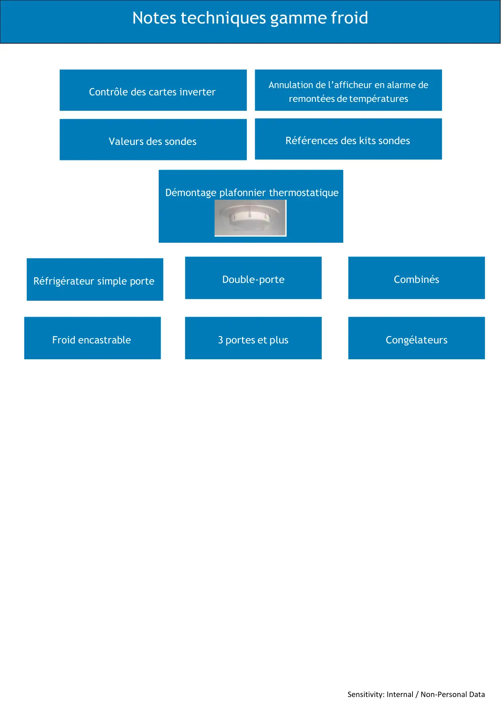

Sensitivity: Internal / Non-Personal DataNotes techniques gamme froidDémontage plafonnier thermostatiqueContrôle des cartes inverterAnnulation de l’afficheur en alarme deremontées de températuresValeurs des sondesRéférences des kits sondesRéfrigérateur simple porteDouble-porteCombinésFroid encastrable3 portes et plusCongélateurs
1 / 2Sensitivity: Internal / Non-Personal DataSensitivity: Public
2 / 2Liens de ce document (11)
PDFDémontage boitier thermostat plafonnier REF2 p.PDFNote Technique Contrôle Cartes Inverter Froid Fabrication Beko15 p.PDFDifférents voyants d'alarme remontée en températures5 p.IMGValeurs des sondes CTNImagePDFRemplacement sonde1 p.PDFInfos techniques Simple porte1 p.PDFInfos techniques double porte1 p.≡Infos techniques combinésMenu · 12 liens≡Infos techniques encastrablesMenu · 5 liens≡Infos techniques 3 portes et +Menu · 3 liensPDFInfos techniques congélateur1 p.